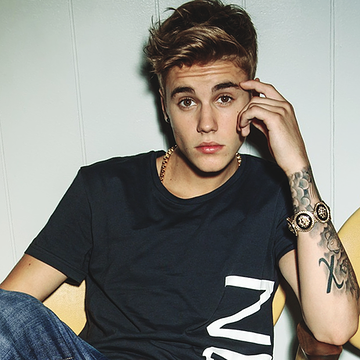

Är du en äkta belieber?
Starta
quiz
Justin Drew Bieber
Justin Bieber är en kanadensisk popartist. Han föddes 1mars 1994 i Ontario. Han växte upp i Stratford , Ontario.
Hans upptäcktes 2008 av Scooter Braun som är hans nuvarande manager. Han första album My World släpptes 17 november 2009. Hans föräldrar heter Patricia Malette och Jeremy Bieber, dom skildes dock när han var 10 månader.
Justin kan spela piano,trumpet,gitarr och slaginstrument.
Hans favoritfärg är lila och hans favoriträtt är spagetti med köttbullar.
Justin har jobbat med artister som Usher, Chris Brown, Fast East Movement, Jaden Smith, Jessica Jarell , Ludacris, Rascal Flatts, Sean Kingston , Will.am och Nicki Minaj.
Justin vill även göra en duett med Beyonce som är hans Kändiscrush. Han har klaustrofobi så därför är han speciellt rädd för hissar och småa utrymmen. Justin skulle kunna tänka sig jobba som arkitekt ifall han inte var sångare,
men när han var liten så drömde han om att bli bagare.
Justin Bieber är vänsterhänt. Han kan prata franska,engelska och han kan räkna till 10 på tyska. Han har ungefär 60 miljoner följare på Twitter och 31 miljoner på Instagram.